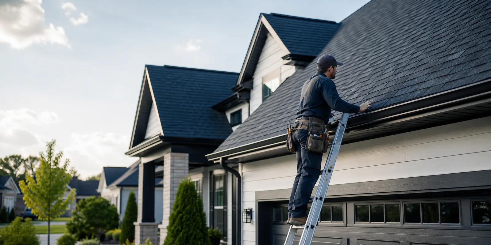

See the condition, the options, and what can wait versus what should be handled quickly.

Residential roof repair and replacement
Roofing that is explained before the work starts.
Residential repairs and replacements backed by photo inspections, clear material options, written scope, and realistic scheduling.
Architectural shingle condition documented
Manufacturer and workmanship terms, exclusions, and care notes are separated clearly.
Serving homes within a 25 km normal callout area with realistic weather windows.
Services
Repair what is damaged. Replace only when it makes sense.
Start with an inspection. The quote explains access, material, ventilation, drainage, warranty, and the work that affects the price.
Leak and damage repair
Targeted repairs that stop active leaks and extend roof life.
Full roof replacement
Complete tear-off and replacement with proper ventilation.
Flat roof and extensions
Low-slope systems, garages, additions, and transitions.
Flashing and penetrations
Chimneys, skylights, vents, walls, and change-of-plane details.
Gutters and drainage
Correct slope, capacity, edge metal, and downspout placement.
Storm and wind damage
Assessment, documentation, and a repair plan without pressure.
Material options
Compare the system, lifespan, and maintenance before choosing.
- 01Architectural shingleDimensional finish
- 02Standing seam metalLong-life option
- 03Flat membraneLow-slope detailing
- 04Edge and flashing metalCritical transitions
What good work looks like
Clear documentation. No surprises. Work that lasts.
Our process
A plan you can see. A job you can trust.
Inspect
Document roof type, visible damage, access, and safety with photos.
Scope
Review options, materials, budget, warranty, and a written price.
Schedule
Set timing, access, delivery, weather backup, and cleanup.
Build
Install to standard, document the work, and hand over care notes.
Get your quote
Start with the right information.
The more we know now, the more useful the inspection can be. Photos help, but they do not replace an on-site check.
- No fake 24/7 promise
- No obligation
- Clear next step